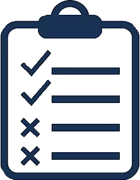

Informa problemas urbanos de forma rápida, adjunta evidencia y realiza seguimiento al estado de tus reportes.
Acceda a la sección Reportar incidencia desde el menú principal.

Ingrese categoría, descripción, ubicación y evidencia fotográfica.
Consulte el estado del reporte y sus actualizaciones posteriores.